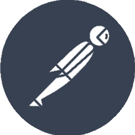

Hi!
Iqbal Apriansyah
I’m a proactive and collaborative Quality Assurance Engineer with approximately 4 years of experience in software testing. Skilled in both automated and manual testing, I have a strong focus on efficiency, reliability, and continuous improvement. I’ve worked with tools like Cypress, Postman, Selenium, and Katalon to ensure high product quality across web and mobile platforms. Passionate about delivering user-centric digital experiences and mentoring QA teams, I continuously learn and adapt to new methodologies.
QA Portfolio
These are selected QA projects demonstrating my hands-on experience with test automation, bug tracking, and quality assurance process optimization in both government and commercial settings.
-
Daftar Hitam Platform - GovTech Procurement
End-to-EndManual and automated testing for E-Katalog v6 and Daftar Hitam LKPP. 100% bug-free release for UAT and production phases.
- 


-
Automation Testing - SIRCLO
RegressionAutomated regression testing using Cypress for JavaScript projects. Delivered 1–3 test cases monthly with full test coverage.
-
Katalon Studio Projects - Wehelpyou
FunctionalCreated automated and manual tests for Android and iOS apps using Katalon. Achieved 100% bug-free production releases.
Contact
If you’d like to collaborate or learn more about my QA expertise, feel free to reach out:
iqbalaprs8@gmail.com
+62 8961 4827 645